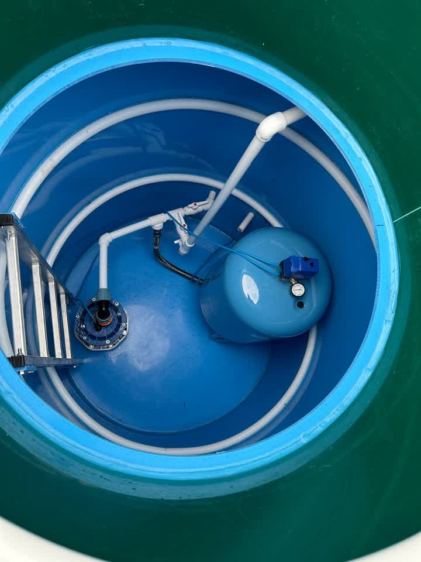
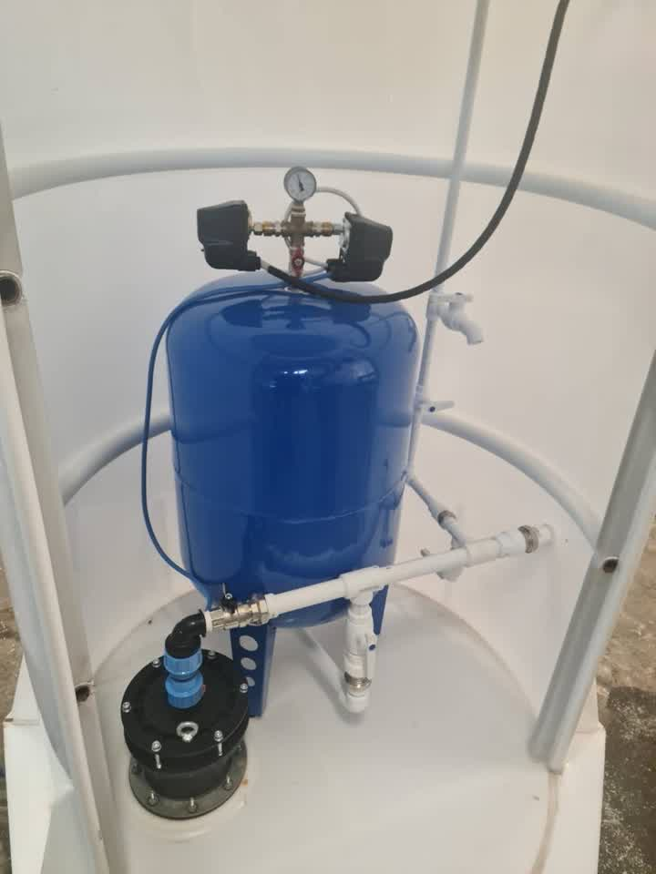
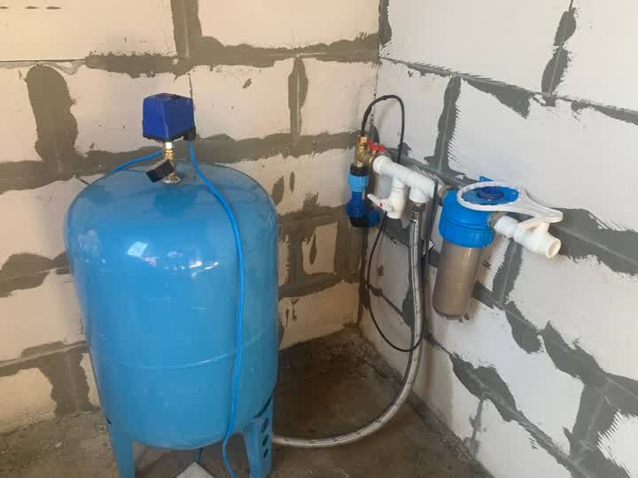

Кессон над скважиной
Ставим и утепляем кессон, заводим внутрь оголовок, насосное оборудование и автоматику. В кессон можно спуститься: поменять реле или снять насос без раскопок.
СтройИнвест → Водоснабжение
Ставим кессон, заводим воду в дом, разводим по точкам и подключаем технику. Зимой не встаёт: труба идёт ниже глубины промерзания. Москва и Московская область.
Что делаем
Ставим и утепляем кессон, заводим внутрь оголовок, насосное оборудование и автоматику. В кессон можно спуститься: поменять реле или снять насос без раскопок.
Копаем траншею ниже глубины промерзания, укладываем трубу в утеплителе и заводим в дом через гильзу. Ставим запорную арматуру и фильтр грубой очистки.
Ведём трубы к каждой точке: кухня, санузлы, котельная, уличный кран. Коллекторная или тройниковая схема — на замере считаем, что выгоднее в вашем доме.
Подбираем фильтрацию по анализу воды, ставим водонагреватель или бойлер косвенного нагрева, собираем обвязку с краном на каждой линии.
Как проходит работа
Смотрим скважину, дом и участок: глубина, куда вести трубу, сколько точек воды.
бесплатноСчитаем оборудование и метраж, показываем смету до начала работ.
1–2 дняКессон, траншея, ввод в дом, разводка, фильтры, подключение техники.
2–7 днейОпрессовываем, проверяем каждую точку, показываем, где что перекрывается.
в день сдачиНаши работы

Кессон над скважинойСпускаемся и обслуживаем — откапывать ничего не надо
Автоматика в кессонеРеле и манометр на виду: давление проверяется за секунду
Узел ввода в домеФильтр и краны в одном месте — воду перекрыть можно не бегая по дому Водонагреватель с обвязкойКран на каждой линии: обслуживать можно, не сливая систему
Водонагреватель с обвязкойКран на каждой линии: обслуживать можно, не сливая систему
 Разводка по каркасуРазвели до зашивки стен — потом уже не переделать
Разводка по каркасуРазвели до зашивки стен — потом уже не переделать
 Разводка в санузлеВыводы под раковину и унитаз собраны до отделки
Разводка в санузлеВыводы под раковину и унитаз собраны до отделки
Частые вопросы
Труба идёт ниже глубины промерзания — в Подмосковье это 1,5–1,8 метра — и дополнительно в утеплителе. Кессон утеплён, внутри держится плюс за счёт тепла земли. Ввод в дом делаем через гильзу, чтобы трубу не зажало при подвижках грунта.
В кессон можно спуститься и обслужить оборудование: поменять реле давления, почистить фильтр, снять насос. С адаптером при любой неисправности участок придётся копать заново. Адаптер дешевле и на небольшой глубине оправдан — скажем честно, когда он вам подойдёт.
Для подбора фильтров — да. Без него фильтрация ставится наугад: в одной скважине железо, в соседней жёсткость, и фильтр под чужую проблему просто не сработает. Подскажем, куда сдать пробу и что заказывать в лаборатории.
Разводку внутри дома, фильтры и обвязку — круглый год. Кессон и траншею копаем, пока грунт не промёрз глубоко: в сильный мороз земляные работы идут дольше и стоят дороже. Если скважина уже есть, а дом подключить надо сейчас, приедем и посмотрим.
Зависит от глубины скважины, расстояния до дома и числа точек воды. Считаем после выезда и называем окончательную сумму до начала работ. Выезд бесплатный.
Ещё мы делаем
Заявка на выезд
Отвечаем круглосуточно: звоните в любое время или пишите в мессенджер — ответим там же.